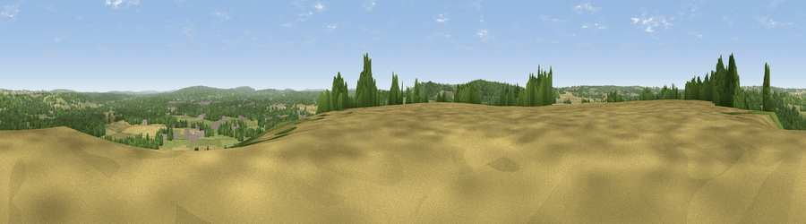

Wick Hill
#20752 in England · top 22% of its area beats it · near OakhangerThe view, rendered

A 360° render of this exact spot computed from the terrain model, tree cover and land cover — summer colours, afternoon light, calibrated against photographs of famous viewpoints. Real trees, hedges and buildings will differ in detail.
The panorama
Grey silhouette: terrain skyline in each direction (720 bearings, Earth curvature and refraction included). Dashed green: skyline with trees (+15 m) and buildings (+8 m) as obstacles. Blue strip: how far the ground is visible on each bearing.
Where the view opens
Wedge length = distance to the farthest visible ground on that bearing (vegetation-aware). Rings at 10, 25 and 50 km.
What fills the view
54% woodland · 28% grassland · 16% cropland · 2% built-up
Angular shares of the visible panorama (visual magnitude), not map area. Landscape diversity 0.46 (0–1 Shannon).
Key numbers
More beautiful places nearby
The staircase of upgrades: each row has a higher view potential than everything closer. Driving times are estimates from straight-line distance, calibrated against real road routing — check an actual route before setting out.
| Place | Direction | Drive | Score |
|---|---|---|---|
| Viewpoint near Selborne | SSW · 3 km | ~7 min | 52.7 |
| Viewpoint near Empshott | SSE · 4 km | ~9 min | 55.0 |
| Noar Hill | S · 4 km | ~9 min | 62.3 |
| Viewpoint near Steep | S · 8 km | ~17 min | 68.7 |
| Viewpoint near Buriton | SSW · 15 km | ~28 min | 75.3 |
| Viewpoint near Buriton | SSW · 16 km | ~28 min | 80.0 |
| Beacon Hill | SSE · 18 km | ~31 min | 85.8 |
| Chanctonbury Ring | ESE · 45 km | ~65 min | 87.0 |
51.11500, -0.92420 · source: dobih hill · position refined by local search. Computed location — check access rights before visiting.